Math for Programmers¶
This tutorial contains practical math for programmers who want to get stuff done, as well as explanation chapters for those who get interested in how the math works.
The Basics¶
This tutorial assumes that you know these things. If you don’t, that’s not a problem at all and you can just keep the basics page open while you read the tutorial.
Functions¶
Here’s a typical math function:
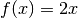
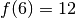
There is no special syntax for defining a function. All we have is the equal sign, and when defining a function we just say that its value at x is equal to something.
If you’re familiar with a functional programming language like Haskell, then you’ll probably realize that the above math looks a lot like this Haskell session:
Prelude> let f x = 2*x
Prelude> f 6
12
Prelude>
If you’re feeling like WTF is this, here’s a Python session that should make everything clear.
>>> def f(x):
... return 2*x
...
>>> f(6)
12
>>>
Quick note about f(x) versus f x: if you define your own function
called  or
or  you should use parentheses, but you may omit them with some
“special” functions like and for historical reasons.
you should use parentheses, but you may omit them with some
“special” functions like and for historical reasons.
Also note that mathematicians prefer single-letter variable names because math was originally written on paper, and writing long things by hand sucks. Again, this doesn’t apply to the “special” functions.
Smiple trigonometry (aka trig)¶
Problem: A player moves to top-right at the angle of 60° measured from the x axis at 10 pixels per second. How many pixels should the player’s x and y change every second?
y
| O <-- the player
| /
| /
| / ) 60°
------------|--/-----------> x
| /
|
Note that the y axis goes up in math so higher means bigger, but in programming it’s usually upside down.
Our problem has something to do with sine and cosine. The unit circle is a circle with radius 1 placed in the middle of the xy plane. Here’s a picture that shows what sine and cosine are:

This is really quite simple: the x coordinate is 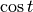 and the y coordinate is 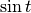. But the radius of the unit circle is 1 instead of our 10, so we need to multiply everything by 10 to scale it up. We get this:
player.x += 10*cos(60)
player.y += 10*sin(60)
Based on the unit circle, should be somewhere between 0 and 1 since the height of the x axis is 0 and the circle’s top is at 1 (the radius is 1). But if we try this out in Python, something is wrong:
>>> import math
>>> math.sin(60)
-0.3048106211022167
>>>
Now you’re feeling really WTF. The angles with negative sines should be below the x axis, e.g. something between 180° and 360°.
The problem is that Python, Haskell, C and most other programming languages use radians by default instead of degrees. Let’s convert 60° to radians so the sine function is happy:
>>> math.sin(math.radians(60))
0.8660254037844386
>>> math.cos(math.radians(60))
0.5000000000000001
>>>
That’s more like it. 0.5000000000000001 is obviously not an accurate
result, but it’s good enough for a programmer while a mathematician would say
that 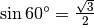 and 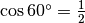. I might write
more about radians, how the heck I came up with those mathy-accurate values and
how Python’s conversion functions work some day.
This tutorial uses the degree sign ° when you may need to convert things between radians and degrees.
Vectors¶
A point is simply a pair of x and y coordinates, and a vector represents the difference between two points. For example, if we have the points 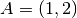 and 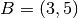, the vector from A to B is 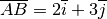. Here 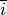 and 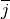 are vectors that go right and up by 1 unit, respectively.
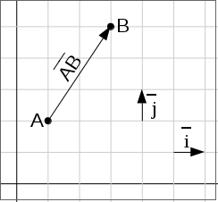A vector like 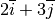 can be also written as 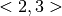. Use whatever style you like.
We could also have used vectors in the above trig example. The advantage with them is that moving the player is really simple:
player.x += speed_vector.i
player.y += speed_vector.j
A disadvantage is that if we want to change the angle that the player moves at
by 1° we can’t just do moving_angle += 1. Of course it’s possible to change
that angle, but not as simple.
Another nice thing about vectors is that they can be +’ed together easily. For example, if we first move 3 units to right, then 4 units to top and then 5 more units to right, our total movement is simply 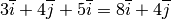.
Now let’s look into handy calculations that can be done with vectors:
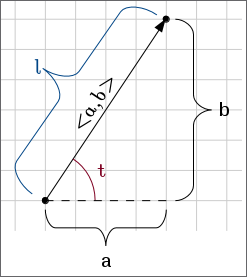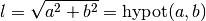
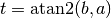
Here atan2 and hypot are functions that mathematicians don’t use. I showed the hypot thing here because some programming languages have it and you might be wondering what it is, but I prefer using the square root version directly because not many people know what hypot does. However, I recommend atan2 because most programming languages have it and it takes care of some corner cases (see the explanation chapter).
Example: if we move 1 unit to the right and 2 units up, our vector is 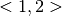, its length is 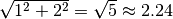 and the angle is 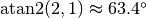.
You can also turn a length and an angle to a vector, but that turns out to be much more complex than the stuff above so I won’t show that here.
How do the formulas work?¶
Some people might be only interested in getting things done, so I put the explanations to another page.
Hexadecimal Colors¶
You might have seen weird colors before, like #ff0000 is somehow magically
red or #0000ff is blue. This section is all about what the heck happens in
this color notation.
Let’s start with an example. If we have a number like 2017, it really means this:
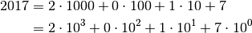
The idea with hexadecimal is that instead of using 10 as a magic number we use 16. That’s why hexadecimal is also called base 16. But the problem is that we only have 10 digits, 0 to 9, so we borrow a few letters so that 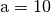, 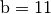, 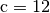 and so on. For example:
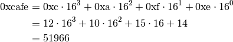
Here 0x means hexadecimal. Mathematicians don’t use it, but I used it here because it’s very common in programming. The x is kinda short-ishy-thingy-like for heXadecimal.
The sane way to calculate the last step is to use a calculator or an interpreter of your choice. Don’t try to do it by hand.
Most programming languages have very good support for hexadecimal and a few other bases. For example, here’s Python:
>>> 0xcafe
51966
>>> 0xc * 16**3 + 0xa * 16**2 + 0xf * 16 + 0xe
51966
>>> 12 * 16**3 + 10 * 16**2 + 15 * 16 + 14
51966
>>> hex(51966)
'0xcafe'
>>> int('cafe', 16)
51966